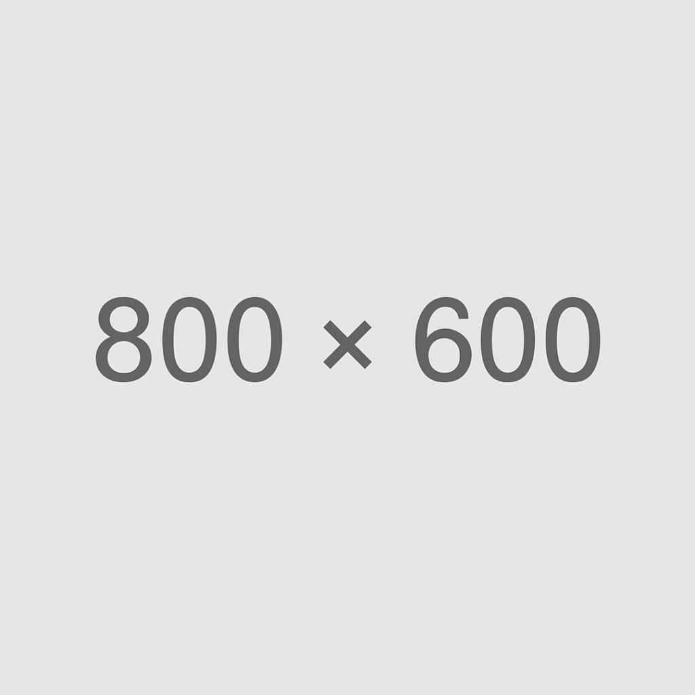

Scheda Cinquecentina n. 001

Nome file: (vuoto)
Titolo: (vuoto)
Pubblicazione: (vuoto)
Descrizione fisica: (vuoto)
Luoghi: (vuoto)
Marca: (vuoto)
Autore/i: (vuoto)
Editore/i: (vuoto)
Localizzazione: (vuoto)
Biblioteca: (vuoto)
Sezione: (vuoto)
Segnatura: (vuoto)
Riproduzione digitale: (vuoto)
Bibliografia: (vuoto)
Legatura: (vuoto)
Note mss.: (vuoto)
Marche di provenienza: (vuoto)
Postille: (vuoto)
Identificativo EDIT16: (vuoto)
Identificativo SBN: (vuoto)
Identificativo CiNii: (vuoto)
Laures Kirishitan Bunko Database: (vuoto)
Digitalizzazioni web: (vuoto)